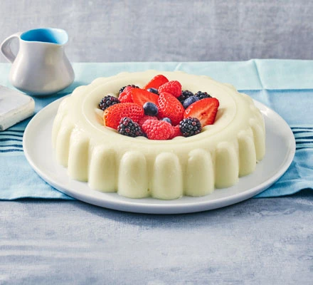

Blancmange

About
A retro, milky dessert according to BBC Goodfood. Gelatenous cake infused with lemon, and topped with berries for a perfect anytime treat!
Ingredients
- Vegetable Oil
- 10 Sheets of gelatine
- 40g Cornflour
- 1.2L whole milk
- 4 large lemons, zest peeled
- 300g Caster Sugar
- 150g mixed fresh berries (optional)
Method
- Oil a 1.2-1.5 litre jelly mould, then set aside. Soak the gelatine in cold water following pack instructions. Mix together the cornflour with 6 tbsp of the milk and pour into a saucepan. Add the remaining milk, lemon peel and sugar, then bring to a boil. Lower to a medium-low heat and whisk continuously until thickened enough to coat the back of a spoon (around 8-10 mins).
- Squeeze any excess water out of the gelatine, then stir into the warm milk mixture to dissolve. Set aside to cool down for 5 mins. Discard the lemon peel, pour the mixture into the prepared jelly mould and put in the fridge to set overnight.
- When ready to serve, bring a kettle of water to the boil and pour into a large heatproof bowl. Dip the mould in the water, holding it there for 1 min. Turn the blancmange out onto a serving plate, and top with a handful of fresh berries, if you like.